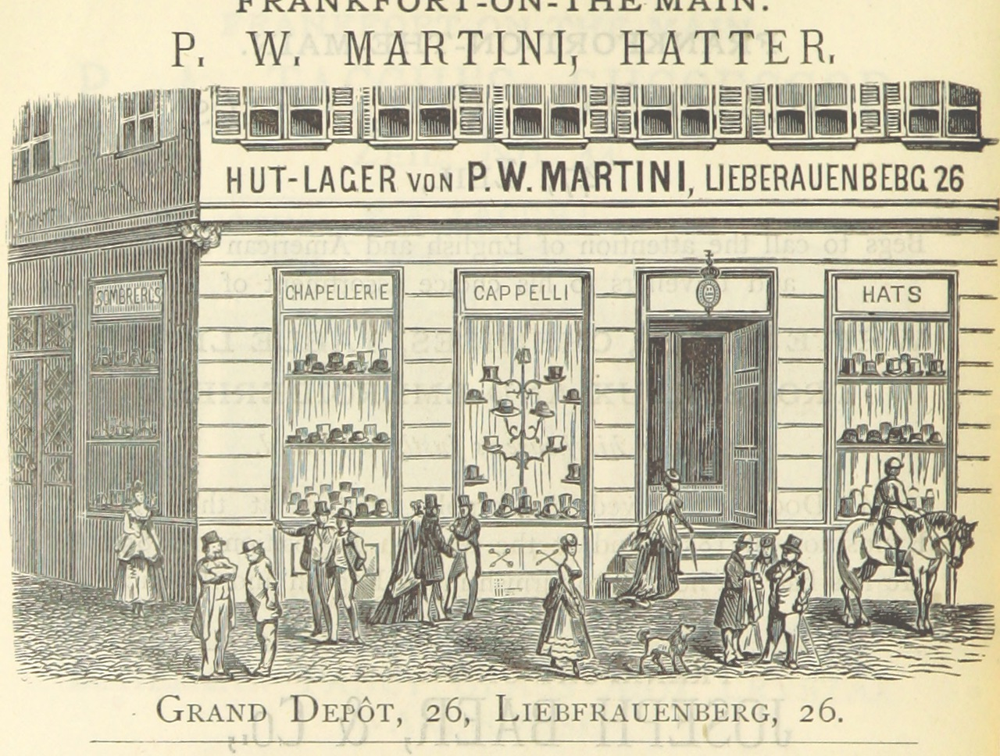
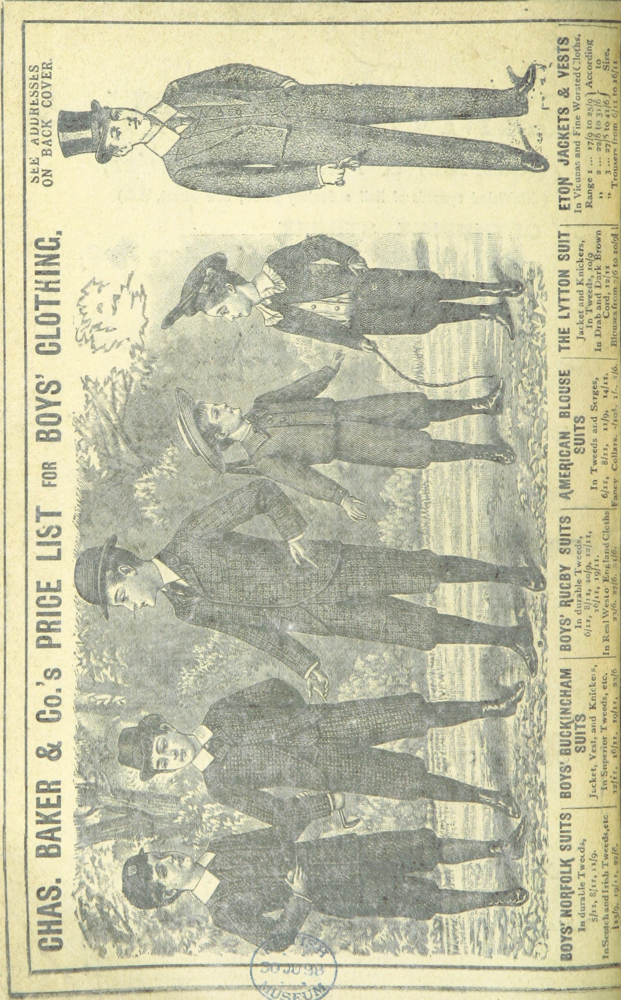
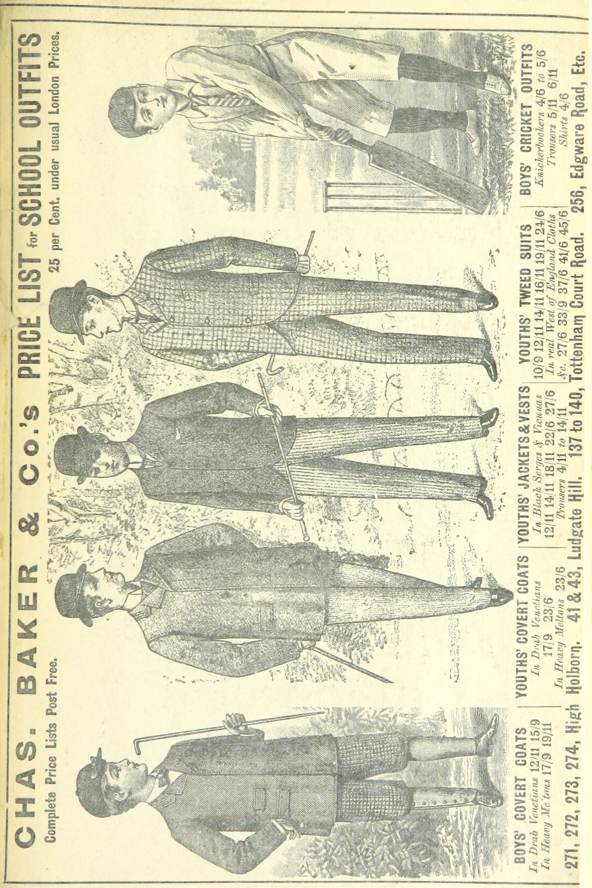
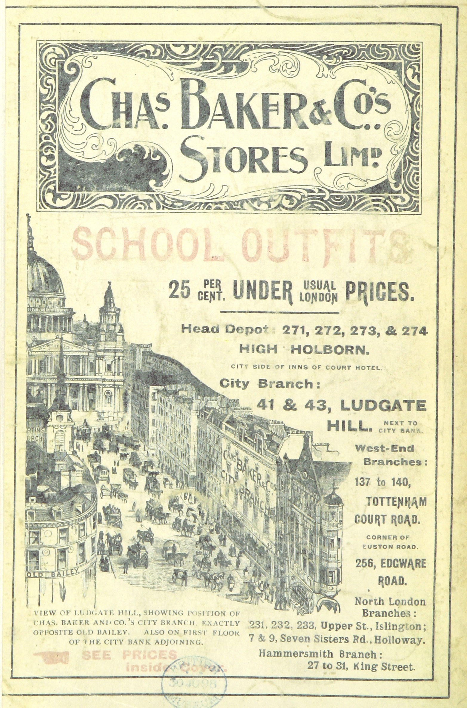

I currently work for a small business, maintaining their webpage and editing the videos, audio, and pictures they generate using the Adobe suite primarily. I would like move towards software or web developing from this position. I look forward to learning more about how to code to begin my career change to a more official developing-centered job.
Code Snippets
Temperature Conversion
This ruby program will prompt the user for a temperature
in degrees Celsius and let the user know what the
corresponding temperature is in Fahrenheit.
def cel2fah(num)
return num * 1.8 + 32
end
puts "Enter degrees in Celsius:"
celsiusdeg = gets
puts "The temperature is #{cel2fah(celsiusdeg.to_f)} degrees Fahrenheit"
puts "Enter a number"
answer = gets.chomp
answer_int = answer.to_i
rem = answer_int % 10
rem100 = answer_int % 100
if rem == 1 && rem100 == 11
puts "#{answer_int}th"
elsif rem == 2 && rem100 == 12
puts "#{answer_int}th"
elsif rem == 3 && rem100 == 13
puts "#{answer_int}th"
elsif rem == 1
puts "#{answer_int}st"
elsif rem == 2
puts "#{answer_int}nd"
elsif rem == 3
puts "#{answer_int}rd"
else
puts "#{answer_int}th"
end
Ordinal Challenge
This ruby program will convert a plain number
to the ordinal of the number. So for example,
if the user enters 2, it will display 2nd, if
the user enters 3, it will display 3rd, etc.
Foobar
This ruby program is an adaptation of a classic technical
interview problem which displays sequences
of the Foobar pattern.
puts "How many digits do you want to see:"
answer = gets.chomp
answer_int = answer.to_i
answer_int.times do |n|
n = n + 1
numb3 = n % 3
numb5 = n % 5
if numb3 == 0 && numb5 == 0
puts "foobar"
elsif numb3 == 0
puts "foo"
elsif numb5 == 0
puts "bar"
else
puts "#{n}"
end
end
Web Apps
Quote Generator
A database-powered quote generator with a mobile-first
design, using the Ruby on Rails framework, HTML, and CSS.
Uses Git and GitHub for version control, and launched
on Heroku.
Yelp Clone
A Yelp clone that integrates with the Google Maps API
and includes features like user comments, star ratings,
image uploading, and user authentication.
Two-Sided Market Place
A two-sided, video-streaming marketplace platform that
features credit card payment capabilities, user role
management, complex user interfaces, and advanced
database relationships.
Test Driven Development
An Instagram clone that was built using industry-standard, test-driven
development following numerous red/green/refactor cycles.
Single Page Todo Application
This single-page to-do application features a
fluid user interface that– by using JavaScript–
allows users to rapidly add dynamic content.
Agile Team Project
Worked on an Agile software development team building
a chess application. Under the guidance of a senior software engineer,
we had weekly Agile team meetings for code reviews, sprint planning,
and feature assignments.
Skills & Tools
Philip has developed proficiency and expertise
in the following programming languages and
comfort with the following tools.
Photoshop Examples




Graphic Examples
Photography
Contact
Currently entertaining new opportunities.
Please get in touch via email: